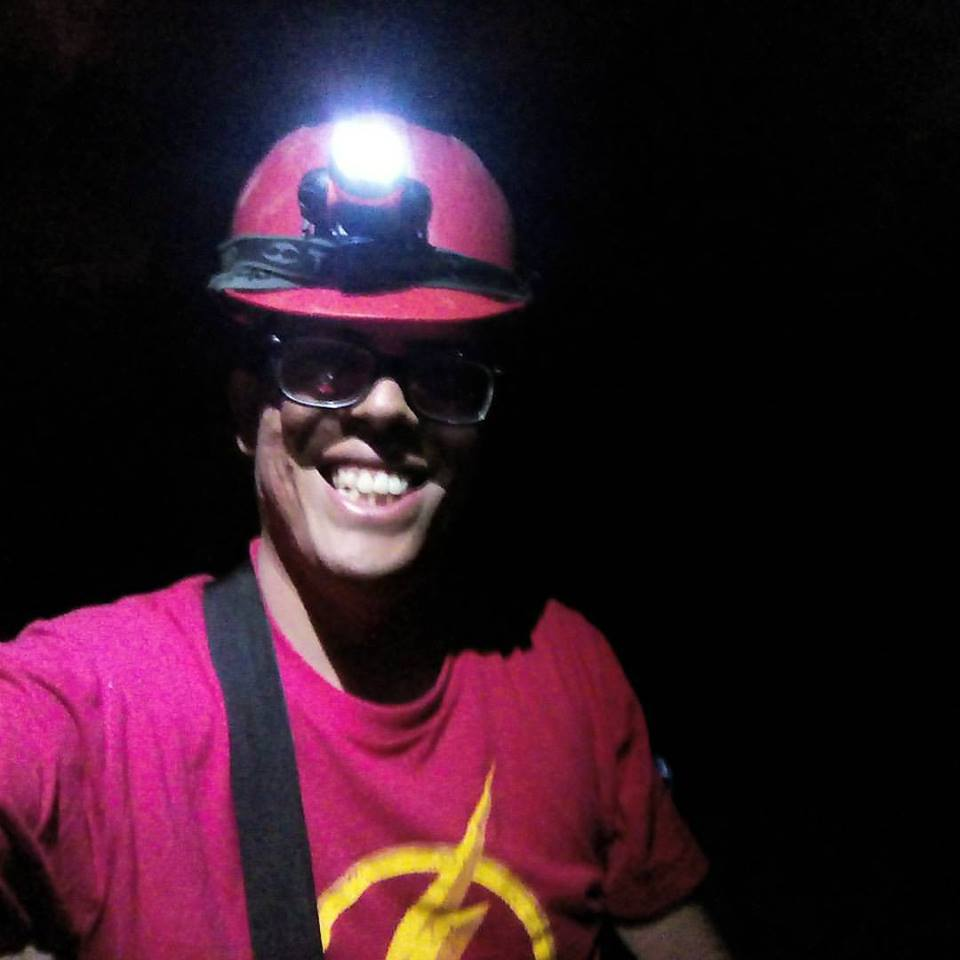

Acerca de mi

José Fernando Recinos
Estudiante en Ingenieria en Ciencias de la Computación
Universidad Mariano Galvez
Soy estudiante que le apasiona viajar y conocer distintos lugares, me encuentro inmerso en las grutas del Rey Marcos ubicada en el departamente de Alta Verapaz, una experiencia llena de adrenalina y exploración.